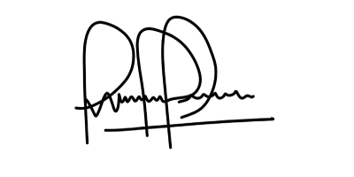

Hola, soy Edwin Camacho y construyo páginas web
Ingeniero en Informática deaños, venezolano, actualmente participa en el proyecto de Oracle ONE en Alura LATAM
Sobre Mi
Soy desarrollador Frontend React Developer, apasionado a la codificación y la experiencia del usuario, me especializo en crear experiencias digitales en la web, me encantan los diseños simples y modernos. Soy una persona autodidacta, y siempre que puedo intento aprender nuevas tecnologías.
Nací Caracas-Venezuela, cursé estudios en la Universidad Alejandro de Humboldt obteniendo el título en Ingeniería en Informática.
Actualmente me enfoco en crear aplicaciones web accesibles, centradas en la experiencia del usuario y escalables. También me encuentro participando en el proyecto de Oracle ONE con el equipo de Alura Latam, donde afianzo mis conocimientos en nuevas tecnologías y mejorando mi codificación con las nuevas prácticas utilizadas en el mercado.
Estoy buscando formar parte de un proyecto que me permita desarrollar los conocimientos adquiridos durante mi capacitación y me haga crecer profesionalmente.
Skill
Manejo de la sintaxis del lenguaje de programación (elementos y etiquetas), permitiéndome estructurar las páginas web con objetos animados, añadir eventos que permitan interactuar con la página en búsqueda de mejorar la experiencia del usuario.
Manejo básico del lenguaje de programación, pero formándome para mejorar mis habilidades con la herramienta. Actualmente, con este lenguaje de programación me permite darles interactividad dinámica a los sitios web.
Manejo básico del lenguaje, pero formándome para mejorar mis habilidades con la herramienta. Actualmente, con este lenguaje de programación me permite desarrollar páginas web y aplicaciones dinámicas favoreciendo la conexión entre el servidor y la interfaz del usuario.
Manejo básico de la herramienta, pero formándome para mejorar mis habilidades. Lo uso para controlar los eventos en tiempo de ejecución de los códigos de javascript con los servidores, la transferencia de datos (push) y servicios de API de back-end.
React me ayuda a crear interfaces de usuario interactivas de forma sencilla. Diseña vistas simples para cada estado en las aplicaciones renderizandolo de manera eficiente.
Lenguaje con el que manejo el diseño y presentación de las páginas web, es decir, cómo lucen cuando un usuario las visita. Funciona junto con el lenguaje HTML que se encarga del contenido básico de las páginas.
Conocimeinto que me permite la administración y mantenimiento de equipos dedicados a guardar datos. Su función es muy importante para todo negocio cuyo crecimiento depende del manejo eficiente de la información.
Con este conocimiento tengo la capacidad de diseñar, configurar, detectar fallas y administrar redes informáticas basadas en una infraestructura con equipos cisco que puedan afectar el flujo de los datos transportados en la red empresarial.
Manejo de centrales telefónicas Empresariales con tecnologías desarrolladas por Mitrol, Asterix o Avaya que permiten administrar y automatizar llamadas inbound/outbound, interactuando con el cliente y enrutandolas al destinatario o bien al sector apropiado dentro de la empresa.
Tengo el conocimiento para la configuración y administración de conexiones VPN para trabajo remotos y transferencias de datos de extremo a extremo de forma segura bajo protocolos de encriptación.
Hobbies
Me encanta viajar, esto me permite conocer gente nueva y adaptarme a sus costumbres global y culturalmente. Me ayuda a mantener la mente aguda, aumenta mi creatividad y me ayuda a crecer personal y culturalmente.
Me gusta tocar guitarra acústica, no soy muy profesional pero manejo el instrumento lo suficiente para disfrutar con amigos y familia.
Uno de los placeres de la vida es oír música, esto nos permite equilibrar nuestras emociones y nuestro estado de ánimo. Cuando trabajo me gusta escuchar música, esto me hace sentir relajado y me ayuda con el estrés de mis actividades diarias.
Soy muy observador y me encanta tomar fotos de paisajes y de los alimentos que me gustan.
Me gusta realizar cursos online, permitiéndome estar al día con nuevas tecnologías que van surgiendo y metodologías prácticas que favorecen el crecimiento profesional.
Habilidades
Tengo la capacidad de Influir positivamente en las personas, motivar y organizar grupo de personas para alcanzar los objetivos y metas propuestas.
Me gusta y apoyo los cambios que puedan mejorar la forma de hacer las cosas. Conozco mis fortalezas y mis debilidades, trabajo constantemente para mejorar lo que me propongo. Me gusta analizar los factores de riesgos y anticiparme a solucionarlos antes que acurran.
Tengo la habilidad para trabajar con otras personas y adaptarme al entorno, cumplo con las actividades que se me asignan que permitan alcanzar los objetivos comunes. Apoyo la colaboración entre equipos y el aprendizaje continuo.
Tengo la capacidad de manejar situaciones o circunstancias de adversidades que me puedan afectar emocionalmente. Trato de mantenerme activo para minimizar la curva de recuperación y sobreponerme rápidamente ante dicha situación.
Soy una persona alegre y me gusta compartir con otras personas, me adapto rápidamente a los grupos, me gusta escuchar lo que piensan otras personas o conocer su punto de vista ante ciertas situaciones y compartir experiencias.
Creo en mi capacidad para realizar las cosas que me propongo, me esmero y trato de hacer siempre lo mejor posible dentro de mis capacidades. Tengo la capacidad de ver oportunidades de mejoras cuando otros solo ven problemas.
Aun cuando soy muy expresivo con mis gestos, trato de controlar mis emociones y pensar o reaccionar racionalmente. Me gusta y manejo la auto crítica y las críticas constructivas que me hacen otras personas, eso hace que sea consiente de cómo me ven otras personas.
Manejo técnicas de Coaching y Feedback que me permiten recibir retroalimentación de mis superiores, ayudar a mi equipo a mejorar los aspectos deficientes y así mismo reconocer las fortalezas de cada uno.
Manejo técnicas de Resolución de problemas, esto me permite evaluar el problema planteado, analizar las posibles soluciones que tengamos, aplicar la solución más viable y medir el impacto que tuvo. Bajo este criterio logro lidiar con los problemas indistintamente de su naturaleza.
Utilizar técnicas de control de la Gestión del tiempo me permite organizar mi día a día con niveles de prioridad usando eficientemente el tiempo que dedico a cada actividad pudiendo así cumplir con mis entregables.
Formación Académica y Cursos
El egresado de esta carrera tendra la capacidad de:
- * Analizar, diseñar y programar sistemas de computación.
- * Capacidad para la toma de desiciones de indole admnistrativo.
- * Establecer normas y procedimientos para los sistemas de computacion.
- * Realizar estudios de factiilidad y desarrollo.
Titulo Universitario TSU-Informática
Año 2005
Este Ingeniero podrá desempeñarse como gerente independiente en el ejercicio libre de su profesión, creando empresas de asistencia técnica y asesoría en áreas de su competencia. También podrá trabajar en organísmos públicos y privados y en compañías dedicadas a la producción de bienes y servicios.
Titulo Universitario Ing. en Informática
Año 2010
Un profesional certificado en Cisco CCNA, tiene los conocimientos necesarios para instalar, configurar, diagnosticar y solucionar problemas específicos en una infraestructura de redes que conecta todos los dispositivos dentro de una empresa.
Switching and Router CCNA
Año 2017
EL profesional de Administrador de Servidores estará capacitado para instalar, configurar, administrar y solucionar problemas en equipos de servidores físicos y máquinas virtuales. Brindará la seguridad informática necesaria que permita el buen funcionamiento de las computadoras en los puestos de trabajo dentro de las empresas.
Administrador de Servidores
Año 2019
El participante tendrá la capacidad de desarrollar software garantizando al usuario final una experiencia increíble en la web, usando algunos de los lenguajes de programación más utilizados en el mercado actual, entre los que cuenta HTML, CSS y JavaScript.
Frontend/Backend React Developer
Año 2022 (en curso)
Experiencia Profesional en Programación
Encriptador de Texto
En este reto nos permitió poner en practica algunos de los principios de la programación, donde tratamos de resolver como encriptar textos con JavaScript y posicionar los objetos en el canva con css. Enviar mensaje al usuario para guiarlo en el uso de la herramienta.
Juego del Ahorcado
Para el desarrollo de este juego demostramos como posicionar objetos con CSS y resolver como ocultar letras con el uso de JavaScript e interactuar con el usuario de una forma divertida.
Barbería Alura
Para este diseño pusimos en práctica el uso de HTML y su estructura donde creamos un menú sencillo y posicionar elementos en el canva con css.
Buona Vita Nutrición
Con este sistema tratamos de demostrar cómo trabajar con tablas usando HTML y JavaScript para crear interacción con el usuario y manejo de datos usando la memoria temporal del navegador.
Fruta y Fruto
En esta página trabajamos los conceptos responsivos ajustando los objetos con CSS y HTML para dispositivos móviles, tabletas y desktop usando los parámetros display y position, organizar las carpetas con las mejores prácticas y estructurar los comandos de forma eficiente.
Alura Storage
En este diseño ponemos en práctica el uso del método Grip para ordenar los objetos en el canva con CSS y HTML demostrando las bondades que ofrece el método.
Mini Alura
En este diseño ponemos en práctica el uso del método FlexBox para ordenar los objetos en el canva con CSS y HTML demostrando las bondades que ofrece el método y demostrando que existen varios metodos para lograr encuadrar los obejtos dentro del DOM.
Apepeira
Para esta página trabajamos las mejores prácticas usadas para estructurar los comandos en HTML y CSS organizando las etiquetas, clases, id dentro del CSS buscando su fácil entendimiento para realizar mantenimiento futuro del código.